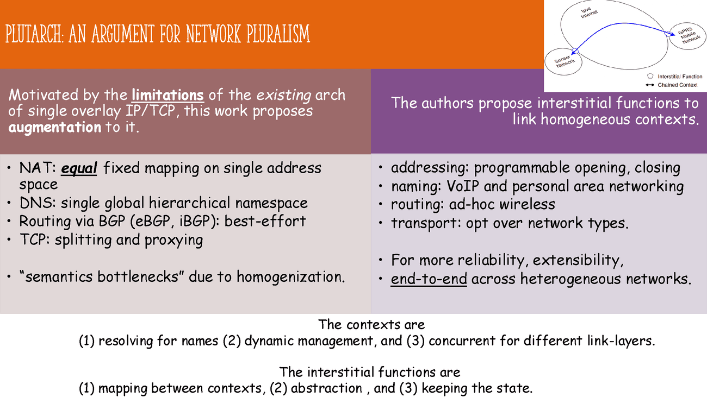

Author: Peter Hu (zh369), 2025-2026.
[1-1] Clark, D. 1988. The design philosophy of the DARPA internet protocols. In Symposium Proceedings on Communications Architectures and Protocols (SIGCOMM ’88), 106–114. Association for Computing Machinery, New York, NY, USA. https://doi.org/10.1145/52324.52336
IP/TCP design principles are described in this paper.
The main goals include (1) continuity under attack by decentralized management, (2) types of service at the transport level (but not actually implemented well, e.g. the removal of "circuit" service), (3) diversity of devices and networks, (4) cost-effectiveness since low barrier to entry, but also (5) hard to account for who is doing what on the network.
Regarding the TCP design, the author discusses the pros and cons the current design on (1) only regulating over bytes rather than packets, and (2) the vanish of End-of-Letter flag (EOL).
In general, I discover that misalignments between the designer and actual users exist, including (1) above mentioned issues, (2) security, (3) separation of administration, (4) resource management.
[1-2] Su, J. et al. (2007). Haggle: Seamless Networking for Mobile Applications. In: Krumm, J., Abowd, G.D., Seneviratne, A., Strang, T. (eds) UbiComp 2007: Ubiquitous Computing. UbiComp 2007. Lecture Notes in Computer Science, vol 4717. Springer, Berlin, Heidelberg. https://doi.org/10.1007/978-3-540-74853-3_23
For dynamic mobile settings, the authors propose application-separate network. Its (1) just-in-time/late-binding interface is great for applications with different modes and environments. (2) Exposure of persistent data and metadata (attribute tags and ownership/dependency relationships) outside of application enables correct searching. (3) Centralized resource management to align all different applications.
The Haggle is implemented via six managers without layer for different modules or data structures, which is more flexible than the traditional OSI model. A prototype is implemented with email and web and evaluated showing the effectiveness of latency. Other applications include predictive and prefetching downloading contents.
The limitations are the lack of future connectivity prediction, and monetary cost or energy consumption.
[1-3] Crowcroft, J., Hand, S., Mortier, R., Roscoe, T., & Warfield, A. (2003). Plutarch: an argument for network pluralism. In Proceedings of the ACM SIGCOMM Workshop on Future Directions in Network Architecture (FDNA ’03) (pp. 258–266). Association for Computing Machinery. https://doi.org/10.1145/944759.944763
Motivated by the limitations of the existing network architecture [1-1], including the "semantic bottleneck" due to homogeneous design, this work proposes augmentation to the single overlay IP/TCP.
The authors suggest interstitial functions (addressing, naming, routing, transport) to support heterogeneous between the contexts, where each context is homogeneous, for different specific network types, e.g. wireless, personal area network.
The contexts between endpoints are (1) resolving for all names (2) dynamic for joining/leaving, (3) multiple for different link-layer technologies, and (4) managed by Plutarch Management Service. The interstitial functions are (1) mapping between contexts, (2) abstracting the contexts, and (3) containing the state.

I noted that there are many related work following in a similar direction, but issues such as the resource allocation, security or auditing are left unaddressed, due to the separation of concerns.
[2-1] Roy, A., Zeng, H., Bagga, J., Porter, G., and Snoeren, A. C. 2015. Inside the social network’s (datacenter) network. In Proceedings of the 2015 ACM Conference on Special Interest Group on Data Communication (SIGCOMM ’15), 123–137. Association for Computing Machinery, New York, NY, USA. https://doi.org/10.1145/2785956.2787472
The paper begins the data center network challenges and their infrastructure setup at Facebook, including data center topology, underlying diverse services between machines within and across each cluster, and data sources collected for analysis.
Then, they illustrate the traffic demands of the services it holds, including the traffic intensity, utilization, locality and stability across different types of clusters. From a fine timescale, it performs traffic engineering to balance the load across the network. Finally, they study the impact of traffic on switch buffering.
The paper is practical and cost reduction focused, useful for large-scale network design beyond proprietary systems. However, the paper provides limited performance metrics and focuses primarily on architecture perspectives, which may not fully address all operational challenges in data center networks, including security and fault tolerance. Another limitation is the lack of exploration outside the social media context, which may limit the generalizability of the findings to other types of data centers.
[2-2] Singh, A., Ong, J., Agarwal, A., Anderson, G., Armistead, A., Bannon, R., Boving, S., Desai, G., Felderman, B., Germano, P., Kanagala, A., Provost, J., Simmons, J., Tanda, E., Wanderer, J., Hölzle, U., Stuart, S., and Vahdat, A. 2015. Jupiter rising: A decade of Clos topologies and centralized control in Google’s datacenter network. SIGCOMM Computer Communication Review, 45(4), 183–197. https://doi.org/10.1145/2829988.2787508
The paper demonstrates Google Clos topologies, i.e. a multi-stage circuit switching network, centralized control protocols for the complexity involved in the data center networks (DCNs). They illustrate their design principles for (1) inter-cluster communication, (2) software control in control plane, (3) routing, and (4) configuration and management. Meanwhile, fabric congestion, outages and hardware aging are discussed during the evolution of the network.
They highlight the design’s scalability, efficiency and cost-effectiveness, showing how it supports rapid growth and operational simplicity. A major strength is its detailed real-world insight and empirical validation over the past dozen o years. However, its proprietary context may limit generalizability, and implementation details are commercial-specific, reducing applicability to smaller or less-resourced data centers.
[3-1] Winstein, K. and Balakrishnan, H. 2013. TCP ex machina: computer-generated congestion control. In Proceedings of the ACM SIGCOMM 2013 Conference on SIGCOMM (SIGCOMM ’13), 123–134. Association for Computing Machinery, New York, NY, USA. https://doi.org/10.1145/2486001.2486020
The paper proposes a machine learning distributed algorithm to congestion control, i.e. when endpoints should send packets, which performs better than traditional hand-crafted algorithms. The authors correctly point out that the conditions for wireless, data center, and cellular networks differ significantly from wired networks, making traditional TCP less effective. Therefore, they propose a data-driven approach to optimize the metrics directly, e.g. throughput and latency.
If prior knowledge is available, it is used as the design range of operation, i.e. lower and upper bounds of parameters. With the traffic model defined, the congestion control algorithm for the particular network can be designed and simulated from state-to-action mapping. However, it should be noted that despite the promising results, the approach adds to the endpoint complexity, causing economics, and motivation concerns for adoption. Moreover, it is limited by the training and testing gap mismatch.
[3-2] Chinchali, S., Hu, P., Chu, T., Sharma, M., Bansal, M., Misra, R., Pavone, M., and Katti, S. 2018. Cellular network traffic scheduling with deep reinforcement learning. In Proceedings of the Thirty-Second AAAI Conference on Artificial Intelligence, the Thirtieth Innovative Applications of Artificial Intelligence Conference, and the Eighth AAAI Symposium on Educational Advances in Artificial Intelligence (AAAI’18/IAAI’18/EAAI’18). AAAI Press, Article 94, 9 pp. https://dl.acm.org/doi/10.5555/3504035.3504129
With the increase demand from IoT for modern mobile networks, providing stable service for dynamic traffic is challenging. The authors use of deep reinforcement learning (DRL) to optimize the scheduling of traffic in cellular networks show increased throughput from past network traces.
They carefully design the state, action and reward for the DRL agent. The state includes the cell congestion, efficiency and number of connections, while the action is the served traffic for each cell. The reward is composed of metrics on concern. The pros are the automated learning and exploration of complex search space, and confirmed by the experimental results. The cons are the limited states and actions assumed, which might not generalize well to real-world scenarios.
PCC Vivace vs. DOTE
| Dimension | PCC Vivace | DOTE |
|---|---|---|
| goal | real-time rate control. | allocate long-term flow. |
| domain | Congestion Control. | Traffic Engineering. |
| assumptions | utility defined; | convex metric; |
| per-MI measurements. | predictable traffic. | |
| dataset | no training data. | historical traffic matrices. |
| methodology | online learning with utility. | offline training with neural net. |
| avoidance | unreliable statistics. | complex reinforcement learning. |
| limitations | instability; convergence speed. | error accumulation, cold start. |
[3-3] Dong, M., Meng, T., Zarchy, D., Arslan, E., Gilad, Y., Godfrey, B., and Schapira, M. 2018. PCC Vivace: Online-Learning Congestion Control. In 15th USENIX Symposium on Networked Systems Design and Implementation (NSDI ’18). USENIX Association. https://www.usenix.org/conference/nsdi18/presentation/dong
By adopting online convex optimization in machine learning to select transmission rates, the authors propose an alternative congestion control (CC) protocol, called Vivace. The pros include their fixes to the unreliable statistics via linear regression, low-pass filtering, and double checking the abnormal measurements through reruns.
From the experiments based on UDT prototype, it outperforms traditional TCP variants, with only sender-side updates and thus easy to deploy. Its convergence speed is fast and guarantees fairness. In addition, it shows high performance in satellite links, compared with other methods, e.g. Allegro. They also test it in application-level, including video streaming and Internet. The results show both friendliness and high throughput.
The future directions include the integration with centralized resource allocation, emulators, and production QUIC implementation. Another concern is the out-of-distribution traffic, which may affect the performance severely.
[3-4] Perry, Y., Frujeri, F. V., Hoch, C., Kandula, S., Menache, I., Schapira, M., and Tamar, A. 2023. DOTE: Rethinking (Predictive) WAN Traffic Engineering. In 20th USENIX Symposium on Networked Systems Design and Implementation (NSDI ’23). USENIX Association. https://www.usenix.org/system/files/nsdi23-perry.pdf
The authors propose applying traffic engineering directly based on historical data with stochastic optimization. It thus avoids the need for prediction, estimation of future demands. They exploit the optimality via direct gradient descent optimization over Maximum Link Utilization (MLU). Given the closed form gradient of MLU, one can then optimize the traffic engineering policy with backpropagation.
They conduct experiments based on minute-level granularity real-world WAN dataset. From the experimental results, DOTE closely approximates the optimal traffic engineering, outperforming existing approaches in quality and run time. This shows that the history traffic with similar condition will likely resemble the future traffic in some way.
To refute the idea of RL, they argue that high sample complexity, sensitivity to noise, and difficulty in tuning hyperparameters are the main issues. The future directions include (1) extension to latency-sensitive traffic, (2) diversity of neural network architectures for WAN topologies, and (3) exploration of tunnel selection.
[4-1] Vallina-Rodriguez, N., Sundaresan, S., Kreibich, C., Weaver, N., and Paxson, V. 2015. Beyond the radio: Illuminating the higher layers of mobile networks. In Proceedings of the 13th Annual International Conference on Mobile Systems, Applications, and Services (MobiSys ’15), 375–387. Association for Computing Machinery, New York, NY, USA. https://doi.org/10.1145/2742647.2742675
The authors emphasize the importance of higher-layer protocols, i.e. network middlebox (HTTP proxies, DNS resolvers, etc), business relationships in mobile networks, which are often overlooked and less attention drawn compared to the radio layer. With information from Android's APIs, they identify the mobile operator. The most common middleboxes exist in cellular networks, e.g. HTTP and DNS proxies mostly hidden from users. They have security concerns, e.g. traffic modification, information leakage and privacy issues.
There are roaming agreements between operators with combination of radio, IP-layer information. It is good from the economic perspective, such that the operators gain revenue from monetizing the user traffic. By doing so, there is no need to deploy the actual infrastructure. Two common types of connections between home and visited networks are (1) home-routed, (2) local breakout. However, it increases the complexity of network analysis.
[4-2] Razaghpanah, Abbas & Nithyanand, Rishab & Vallina-Rodriguez, Narseo & Sundaresan, Srikanth & Allman, Mark & Kreibich, Christian & Gill, Phillipa. (2018). Apps, Trackers, Privacy, and Regulators: A Global Study of the Mobile Tracking Ecosystem. http://dx.doi.org/10.14722/ndss.2018.23009
This work focuses on third-party services in the mobile ecosystem, including Advertising and Tracking Services (ATS). With collection of data from Lumen Privacy Monitor, they develop automated methods to detect ATS at traffic level, where 10% services not known to previous blacklists. They include the business relationships between first/parent and third parties, cross-device tracking services, potential privacy violations and implications.
On the other hand, there are existing law regulations, e.g. GDPR in Europe, COPPA rule for children protection and parental control in the US. Despite some fines posed by the federal agencies, there're still violations in the advertising and tracking services, due to ignorance or lack of awareness. The scale of number of applications and services makes it hard to monitor and enforce the regulations. In addition, unclear regulations leave room for loopholes.
[5-1] Saidi, S. J., Mandalari, A. M., Kolcun, R., Haddadi, H., Dubois, D. J., Choffnes, D., Smaragdakis, G., and Feldmann, A. 2020. A haystack full of needles: Scalable detection of IoT devices in the wild. In Proceedings of the ACM Internet Measurement Conference (IMC ’20), 87–100. Association for Computing Machinery, New York, NY, USA. https://doi.org/10.1145/3419394.3423650
In face of potential attack surface increase from IoT devices, the authors propose a scalable way to detect and monitor IoT devices with passive and sparsely sampled network headers. With the increase of IoT devices, the challenges involve (1) the bad availability and granularity of data sources, (2) diverse traffic patterns depending on both the devices and services. They classify the backend domains and IP addresses, deriving distinct signatures (IP/domain, port destination, protocol, etc) for IoT devices.
In addition, from the subscriber lines, they can detect such devices via sparsely sampled flow from a large ISP. Their approach excel in scalability and efficiency, with high precision. The pros of the work include the extra security benefits where traffic can be blocked and used for troubleshooting, incident response. The cons are the privacy concerns, where IoT devices can be identified and tracked by adversaries. They also assert that the approach may not work well for CDNs shared infrastructure, but good for hidden IoT services there.
[5-2] Mineraud, J., Mazhelis, O., Su, X., and Tarkoma, S. 2016. A gap analysis of Internet-of-Things platforms. Computer Communications, 89(C), 5–16. Elsevier Science Publishers B.V., NLD. https://doi.org/10.1016/j.comcom.2016.03.015
The work surveys a list of proprietary and open-source IoT platforms, evaluating them on the basis of (1) heterogeneous hardware support, (2) data ownership methods, (3) support for application developers, (4) possibility of the IoT ecosystem, and (5) availability of dedicated marketplaces. A gap analysis is performed, showing the difference between the current status and the expectations from the IoT platforms, showing the opportunities for future improvements, limitations and risks involved.
Based on the analysis, they recommend future directions, including (1) developing a dedicated IoT marketplace, (2) provision of SDKs and open APIs, (3) local data processing for privacy, (4) providing data processing and sharing mechanisms, and (5) supporting heterogeneous devices. The pros of the survey include a comprehensive overview, with a table covering the platforms, architecture and other main features. The cons are the limited number of platforms surveyed, and the lack of deep technical discussions for each individual platform due to space constraints.
[6-1] Kakhki, A. M., Jero, S., Choffnes, D., Nita-Rotaru, C., and Mislove, A. 2017. Taking a long look at QUIC: An approach for rigorous evaluation of rapidly evolving transport protocols. In Proceedings of the 2017 Internet Measurement Conference (IMC ’17), 290–303. Association for Computing Machinery, New York, NY, USA. https://doi.org/10.1145/3131365.3131368
Based on the UDP transport, Google introduced QUIC as an alternative to TCP. Due to the rapid revision of QUIC, the authors propose an alternative evaluation analysis framework. It enables the cross-version comparison, access to state machine from source code and execution traces, and testbed for real-world experiments including video streaming. From the experiments, QUIC has a better performance than TCP, e.g. when fluctuating bandwidth due to precise RTT and bandwidth estimation.
However, the performance decreases for mobile devices and cellular networks. This is due to the overhead of packet processing and encryption of the application layer. Furthermore, it suffers from (1) aggressive increase of window size, (2) small packets multiplexing and (3) re-ordered packets, as QUIC interprets them as losses and retransmits more than required. Future directions are evaluation in data centers, fairness improvements, and automated evaluation and testing.
[6-2] Zhang, X., Jin, S., He, Y., Hassan, A., Mao, Z. M., Qian, F., and Zhang, Z.-L. 2024. QUIC is not Quick Enough over Fast Internet. In Proceedings of the ACM Web Conference 2024 (WWW ’24), 2713–2722. Association for Computing Machinery, New York, NY, USA. https://doi.org/10.1145/3589334.3645323
The authors compare two technical network stacks, i.e. UDP + QUIC + HTTP/3 and TCP + TLS + HTTP/2, over high-speed networks (WiFi 6/7, 5G with over 1 G bits per second for each connection). From the experiments of file download and Chromium-based client with similar settings, they conclude that QUIC is slower than fast Internet protocols, especially for those high bandwidth scenarios. In particular, QUIC CPU client-side CPU usage is higher due to processing overhead, excessive data packets and user-space ACKs high delay.
To mitigate the issues, they recommend deploying QUIC friendly offloading, multiple cores support for concurrency, careful redesign of upper layer protocols. Moreover, the reliance on UDP and user-space processing limit the performance, due to the lack of kernel optimizations. I agree that there are rooms for collaborations between OS vendors, developers and standardization organizations for evolution of QUIC.
[6-3] Erman, J., Gopalakrishnan, V., Jana, R., & Ramakrishnan, K. K. 2013. Towards a SPDY’ier Mobile Web? In Proceedings of the 9th International Conference on emerging Networking Experiments and Technologies (CoNEXT ’13). ACM. https://dl.acm.org/doi/10.1145/2535372.2535399
As an alternative HTTP, SPDY addresses the limitations of setup latency, multiple connections. The authors conduct measurement and analysis of the new protocol on mobile cellular networks. They find that its performance gain is limited due to lack of interation between TCP and cellular networks. This is due to the implicit assumption of the fixed round trip time (RTT) over a certain period, which no longer holds in cellular networks. The congestion window (CWND) growth is minimal given the above assumption, leading to unnecessary retransmissions and thus under-utilization of the network capacity.
To minimize the issues, they suggest (1) using multiple TCP connections, (2) resetting RTT estimates more frequently, especially after idle periods, (3) avoiding slow start after idle periods for some cases, (4) TCP variants, e.g Cubic rather than Reno, and (5) careful examination of TCP cache statistics on OS.
[7-1] Scellato, S., Mascolo, C., Musolesi, M., and Crowcroft, J. 2011. Track globally, deliver locally: Improving content delivery networks by tracking geographic social cascades. In Proceedings of the 20th International Conference on World Wide Web (WWW ’11), 457–466. Association for Computing Machinery, New York, NY, USA. https://doi.org/10.1145/1963405.1963471
The paper focuses on how to cache media contents considering geographic and social information. By deciding whether an item should be cached locally and globally from social cascades, the cache replacement policies can be improved. The important gist is that contents are better cached near servers which are close to users interested in it, minimizing the network traffic impact. From the unique geo-social dataset from Twitter (X), which contains geographic location, follower lists and tweets, they track the spread of videos and verify the proof-of-concept design of CDN design effectiveness.
They adopt the idea of graph theory, e.g. reachability, centrality, and range, to model the cascade process. The node locality is defined as an exponent decay function of distance, where the larger the locality, the more likely the content resides nearby. The pro is the locality information instructs large-scale system design.
[7-2] Buldyrev, S., Parshani, R., Paul, G. et al. Catastrophic cascade of failures in interdependent networks. Nature 464, 1025–1028 (2010). https://doi.org/10.1038/nature08932
The paper investigated the effects of interdependent networks cascading failures, also knownas concurrent malfunctions. They proposed a framework for networks robustness, with analytical solutions for nodes critical score of removal. Different from single network, the more degree distribution adds to the random failure vulnerability. They model the power network blackout in Italy in 2003, with real geographically locations and real-world data. A single power station leads to the failure of nearby single Internet facility, which in turn causes a giant cluster removal in the region.
They then follow up with more detailed mathematical modelling, theory from generating functions and percolation theory, and computer simulations. The pros are its intention to emphasize the importance of single-point failures in the interdependent networks, and the comprehensive mathematical analysis. Future work includes the solutions on how to mitigate the mentioned vulnerabilities.
[8] Key, P., Massoulié, L., and Towsley, D. 2011. Path selection and multipath congestion control. Communications of the ACM, 54(1), 109–116. Association for Computing Machinery, New York, NY, USA. https://doi.org/10.1145/1866739.1866762
The paper points out the pros of multiple paths in sessions, with rate control over them. There are two categories, (1) coordinated control, (2) uncoordinated control. The difference lies in whether the rate is controlled per path or jointly across all paths. This is important for load balancing across the network. When the paths are fixed, they found out that coordinated control performs better than uncoordinated one, where the former as if the global load balancing is performed.
From game theory perspective, they argue that each player, i.e. session, greedily searches for throughput maximization, leading to equilibrium. However, the equilibrium may not be optimal for the overall network performance. RTT bias is not needed for uncoordinated control. In summary, congestion control for multipath is important for performance improvement. Despite the simplicity of uncoordinated control, the coordinated one performs better.
This section discusses two papers on divergent and opposing goals: accountability and anonymity.
| properties | AIP | TapDance |
|---|---|---|
| prerequisite | regulated networks | voluntary stations |
| packet | identifiable header | encrypted header |
| identity | traceable | concealed |
| ISP | detecting source | mirroring traffic |
| authorities | trusted | untrusted |
| purpose | misuse prevention | circumvent censorship |
| legal | support law enforcement | challenge censorship |
[9-1] Andersen, D. G., Balakrishnan, H., Feamster, N., Koponen, T., Moon, D., and Shenker, S. 2008. Accountable internet protocol (AIP). SIGCOMM Computer Communication Review, 38(4), 339–350. Association for Computing Machinery, New York, NY, USA. https://doi.org/10.1145/1402946.1402997
The accountability refers to the ability to associate actions with their responsible entities. By using a hierarchy of self-certifying addresses, A-IP provides accountability as a first-order property, solving source spoofing, denial-of-service, route hijacking, and route forgery. The self-certifying no longer relies any global trusted authority, but each entity manages its own addresses and keys.
The strength is its interaction with the existing IP architecture, including routing, forwarding, end-to-end transport engineering and DNS. There are also good use of cryptographic techniques for authentication and integrity. The protocol is introduced with detailed design and analysis.
The potential limitations lie in the key management and authentication overhead, as well as the scalability of the hierarchical address structure in large-scale networks. However, they address that these challenges are manageable from the long-term perspective.
[9-2] Frolov, S., Wustrow, E., Douglas, F., Scott, W., McDonald, A., VanderSloot, B., Hynes, R., Kruger, A., Kallitsis, M., Robinson, D. G., Schultze, S., Borisov, N., and Halderman, J. A. 2018. An ISP-Scale Deployment of TapDance. In Proceedings of the 2018 Applied Networking Research Workshop (ANRW ’18), 22:1–22:1. Association for Computing Machinery, New York, NY, USA. https://doi.org/10.1145/3232755.3232787
Refraction networking, e.g. TapDance, refers to the censorship circumvention technique that forwards traffic to not just proxy servers, but also network operators in general. This makes censorship harder, since it costs more to block all network operators.
The paper experiments the TapDance refraction scheme in an ISP-scale deployment, showing its scalability for tens of thousands of users, and managing the management and operational overhead posed. It's not hard to configure the gateway, by mirroring traffic on a port, and getting not caught by the censoring systems. For multiple users, parallel connections are supported. However, the space constraints bottleneck the scalability.
From the trial results, there are sessions without real usage, other restarted due to network instability, and ending in timeout. The low bandwidth limits the traffic volume, lowering download speed. It paves way for future refraction networking deployments (version 3-5, etc).
[10-1] Kelly, F. P. 2000. Models for a self-managed Internet. Philosophical Transactions of the Royal Society A, 358, 2335–2348. https://www.statslab.cam.ac.uk/~fpk1//PAPERS/smi.pdf
Via various mathematical models, the author explored the results of communication capcity after evolution of the Internet. The conclusion is that the queueing delays will be small with respect to propagation delays.
It assumes that the capacity is adequate, whereas overloaded network can include traffic classes. In addition, it further requests a good load control of traffic, stemming from weighted proportional fairness criterion. Further discussions include the adaptive and non-adaptive traffic cases and short transfers.
The pros are the precise equation under assumptions, and relation to economic pricing models. However, the assumptions may not hold in real-world networks, e.g. endpoints may not behave rationally, the network capacity may not be sufficient, and missing Explicit Congestion Notification (ECN) support. Therefore, extra work is needed to validate the models in practice.
[10-2] Handley, M., Raiciu, C., Agache, A., Voinescu, A., Moore, A. W., Antichi, G., and Wójcik, M. 2017. Re-architecting datacenter networks and stacks for low latency and high performance. In Proceedings of the 2017 ACM SIGCOMM Conference (SIGCOMM ’17). Association for Computing Machinery, Los Angeles, CA, USA. https://doi.org/10.1145/3098822.3098825
The paper addresses the open problem of how to achieve low latency and high performance in data center networks (DCNs). They propose the NDP protocol, which contains no handskake, uses per-packet multiple path load balancing. Therefore, it provides instant transmission and avoids network congestion. The transport protocol is receiver-driven to exploit the network capacity. For example, trimmed packet header will inform the receiver with little overhead to the bottleneck link. Then, a NACK-based loss recovery is performed quickly.
In general, they provide a system-level practical design with implementation and evaluation, including sensitivity analysis. However, the limitations are the data center application domain might not be generalizable to other wider area networks. They further require additional changes to the network stack and hardware, and extra trimming of packets, consuming larger amount of CPU computation and energy.
[10-3] Singhvi, et al. 2025. Falcon: A Reliable, Low Latency Hardware Transport. In Proceedings of the ACM SIGCOMM 2025 Conference (SIGCOMM ’25). Association for Computing Machinery, New York, NY, USA, 248–263. https://doi.org/10.1145/3718958.3754353
Falcon brings together the benefits of hardware transport (low latency, high throughput) and software one (flexibility, reliability, ease of deployment). It supports various upper-layer protocols, e.g. RDMA, NVM express, custom ULP, via each corresponding mapping layer. With the translated operations, the Transaction layer handles the resource management, ordering and scheduling. There are also layers for (multipath) packet devlivery and adaptive engine for congestion control.
The strengths are (1) its decouling between packet-level and transation-level ordering, (2) RTT delay-based congestion control, (3) default multipath support, (4) hardware buffering out-of-order packets for reliability, (5) loss and reordering distinguishing and handling, and (6) resource management with per-connection limits and fairness. In general, they provide a good software-hardware co-design for transport protocol.
However, the limitations include (1) the datacenter network specific design, (2) the programmability might introduce extra overhead, security concerns, (3) the generalizability might fail short when compared with specialized hardware.
[10-4] Lu, J., et al. Alibaba Stellar: A New Generation RDMA Network for Cloud AI. In Proceedings of the ACM SIGCOMM 2025 Conference (SIGCOMM ’25). Association for Computing Machinery, New York, NY, USA, 453–466. https://doi.org/10.1145/3718958.3750539
For AI training and inference, Remote Direct Memory Access (RDMA) and its GPU variant (GDR) are the cornerstone for high performance networking. Traditional RDMA virtualization suffers from poor scalability, static configuration, memory overhead, startup time, interference with TCP traffic.
To enable efficient virtualization, (1) they propose Para-Virtualized DMA (PVDMA), which allows guest OS to interact directly with the hypervisor. It removes the upfront Guest Physical Memory (GPM) registration, and enables on-demand memory registration. (2) They extend the Memory Translation Table (MTT) in NIC for better performance, avoiding unnecessary cache misses and PCIe Address Translation Caches (ATC) lookups. (3) They deploy Oblivious Packet Spraying (OPS) with a short Retransmission Timeout (RTO) for multipath load balancing.
Stellar still relies on specialized hardware, which may limit its adoption in general scenarios. Multipath load balancing spraying introduces extra overhead and monitoring complexity. Nevertheless, the authors provide a comprehensive hardware-software co-design for RDMA in large AI training cloud clusters.
NDP vs. Falcon and Stellar
| Features | NDP | Falcon | Stellar |
|---|---|---|---|
| multi-ULP support | |||
| multipath | packet spraying | ||
| trimming | |||
| congestion control | receiver-driven | delay-based | window-based |
| hardware support | Switch (trimming) | NIC | NIC |
| ordering support | receiver | ||
| rate | SW-limited | HW-limited | AI workloads |